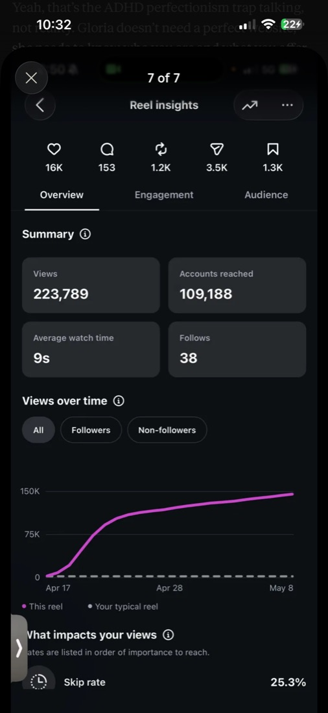
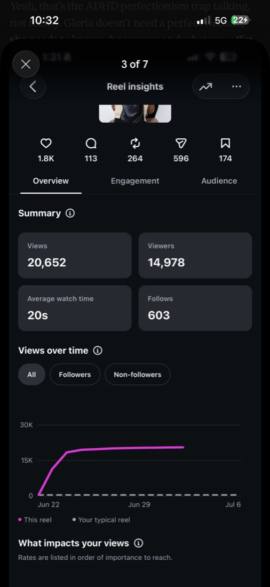
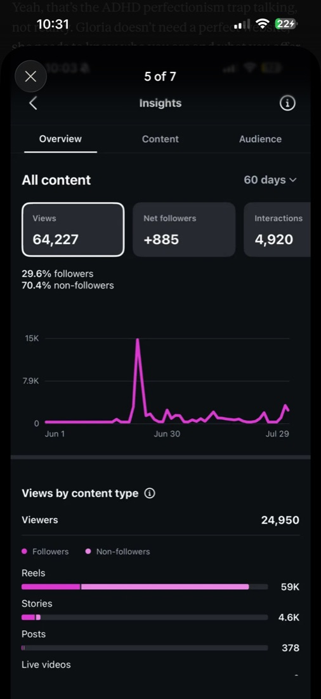
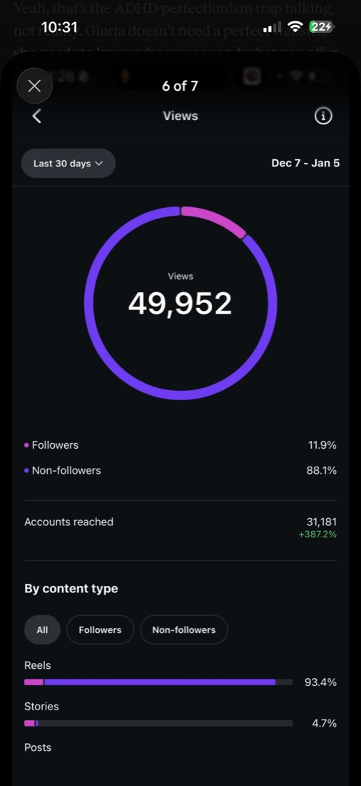
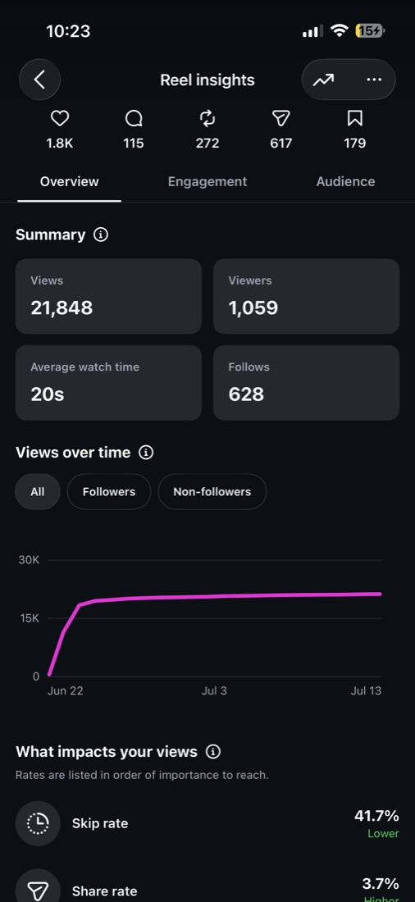
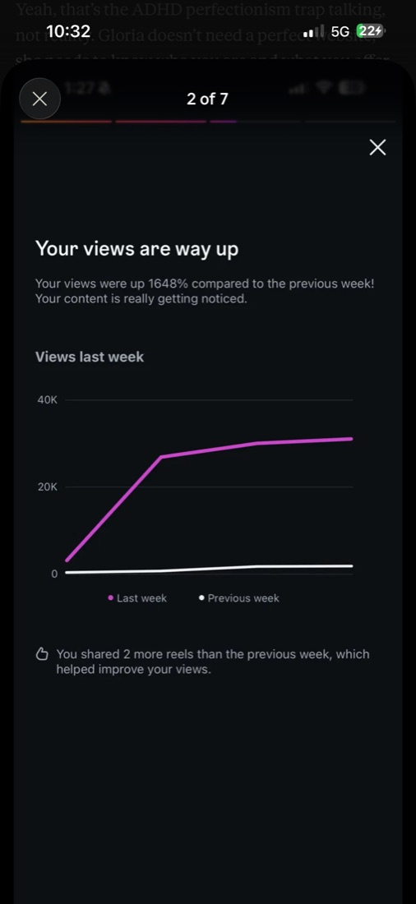
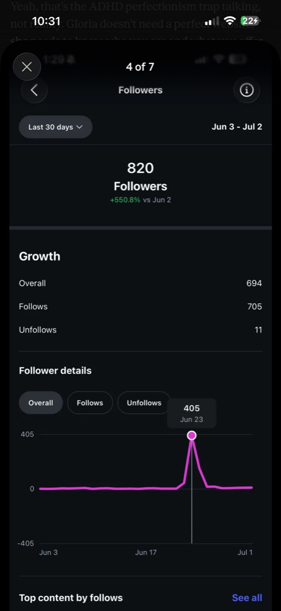
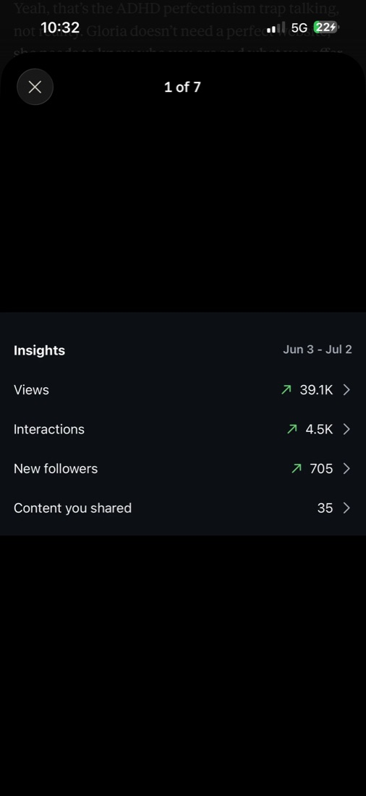
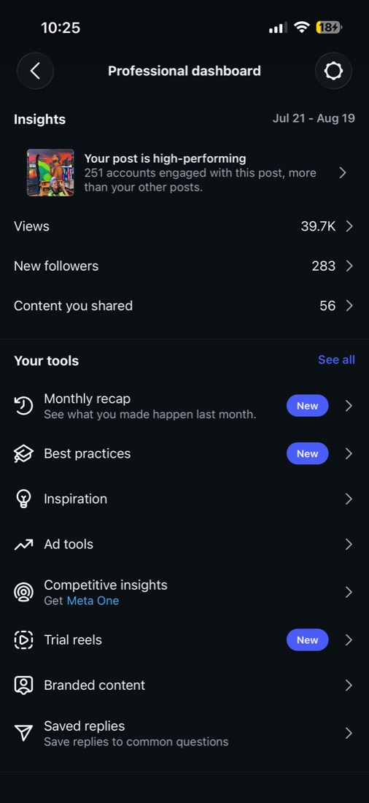
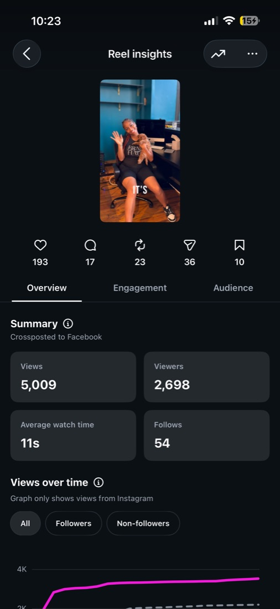

Content strategy
Selected work · strategy through execution
Work that made brands easier to choose.
Content, direction, development, and production connected to a reason—not activity for activity’s sake.
What’s in my brain
EvidenceBrand → choiceNext move
Content strategy
Brand development
Creative direction
Social content
Podcast production
Website support
A few things I make
Ideas made visible.
The footage below is embedded directly into this portfolio, so the work does not depend on a Canva link to play.
Brand development
Podcast production
Selected social results
The receipts, with the dates intact.
Each image is an original platform snapshot. The periods and posts differ, so the figures are intentionally presented as separate examples rather than a single campaign total.






See four more source snapshots




Capabilities
01
Content strategy
02
Brand development
03
Creative direction
04
Social filming + editing
05
Podcast production
06
Website support
Build from evidence